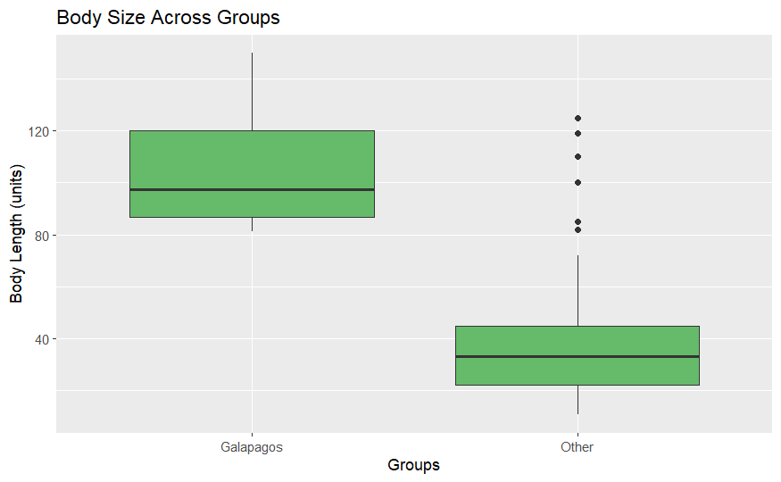
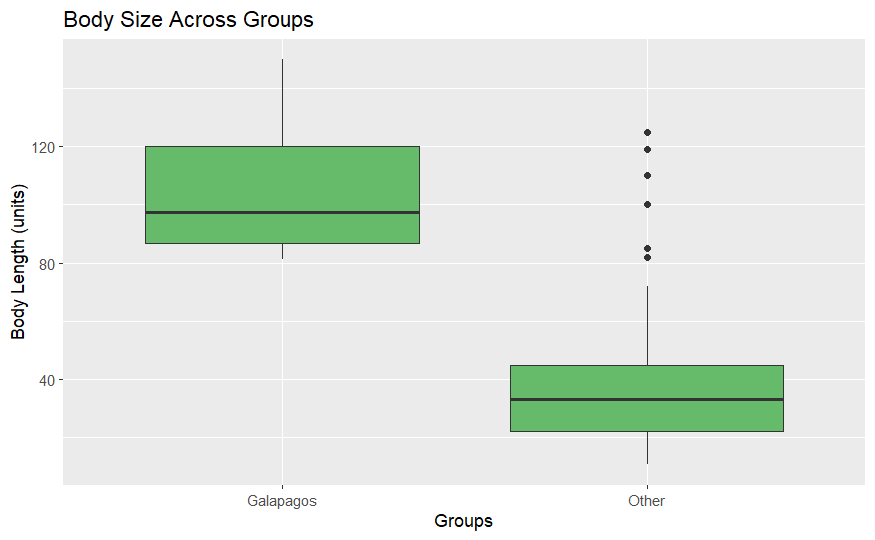
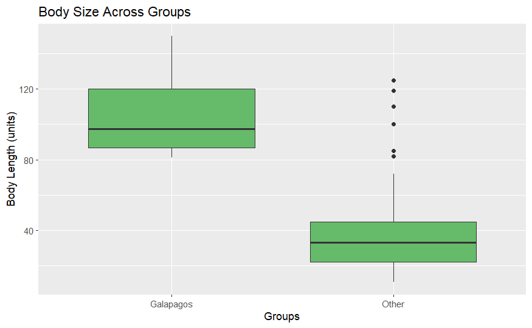

Galapagos Islands Testudinidae Macroevolution
Macro-evolutionary Patterns of Giant Tortoises
Authors: Paige Cherry, Sara Cielaszyk, Hubert Kasprzycki and Eleanor Tuck
Home
Data
Length Data
Island Data
Diversification Rates
Research Paper
References
Team Bios & Contact
Interactive Galapagos Island Plot
Body Size vs Island Plots

 
